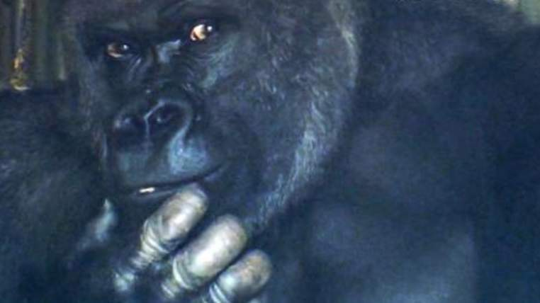

Primal Instincts: Hunky Ape Has Japan Swooning
A giant gorilla who strikes poses for photos and has been described as "very good-looking" is being credited for attracting more women to a Japanese zoo. Women are apparently so smitten by his looks that they have taken to social media to swoon and, according to the zoo, are flocking to his pen to take a peek.